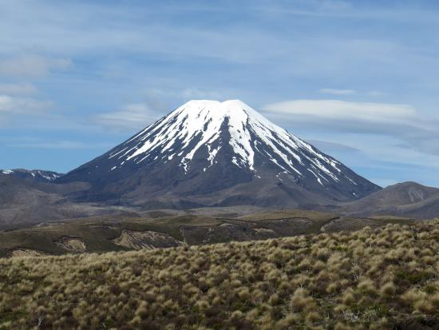
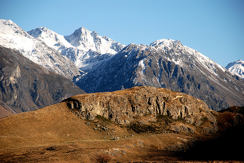
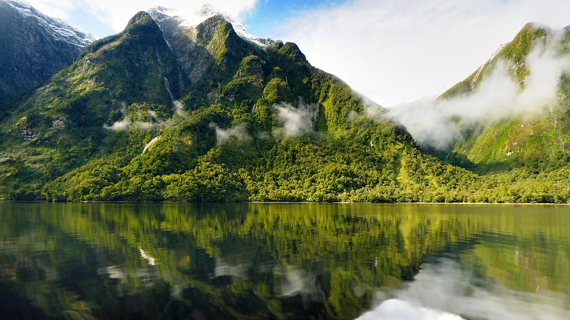
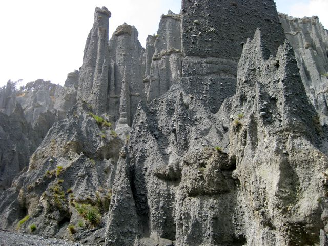

Hobbiton is a small town in The Shire, the home of the Hobbits in Middle Earth. In real life there is a built replica of Hobbiton in Matamata in the Waikato region of New Zealand, that you can visit yourself.
Mount Doom is the mountain where the one ring was forged and it is actually a mountain (or rather a volcano) that exists in real life. It's real name is Mount Ngauruhoe and it is located between two other volcanos, Mount Tongariro and Mount Ruapehu.
Mount Sunday is the real life location of Rohan in The Lord of the Rings. Edoras, the capital of Rohan, is placed atop of the mountain in the movie
Fangorn Forest makes an appearance in Lord of the Rings The Two Towers. The spooky forest is really a beautiful national park located in Te Anau called Fiordland National Park.
The Paths of the Dead is the location in Return of the King, where Aragorn and the others have to recruit an army of ghosts to win the war against Saruman. In real life this place is called the Putangirua Pinnacles and is located
